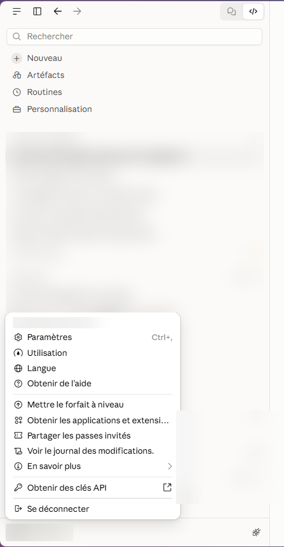
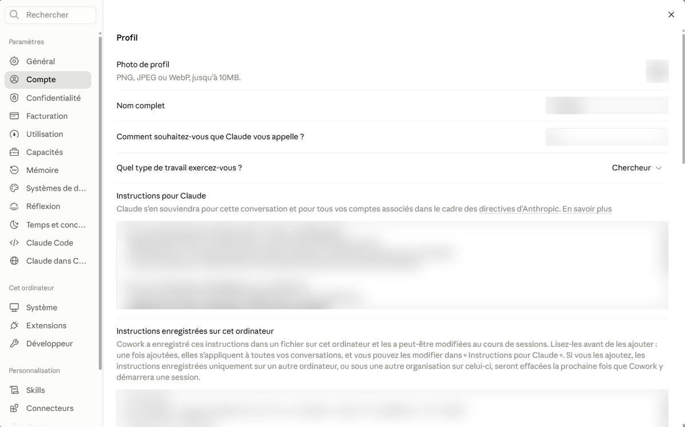

Apprendre à Claude comment tu travailles, une seule fois
Environ quinze minutes pour que Claude ne devine plus : il pose la question ou liste ses hypothèses, et ne cite que des sources vérifiées.
Avant de commencer
Tu vas régler deux choses : un socle, collé une fois dans « Instructions pour Claude », et cinq skills (un par tâche) que tu importes dans Claude. Le socle porte les règles qui valent pour toutes tes tâches. Chaque skill porte la méthode d'une tâche : comptes rendus, PIA, réunions d'intégration, suggestions d'AU et d'AR, création d'outils.
Tu ne changes jamais de texte d'une tâche à l'autre : Claude charge le bon skill quand ta demande correspond.
Prépare, sur une feuille ou dans ta tête :
- ta fonction et le Pôle où tu travailles ;
- tes tâches principales ;
- les textes de référence que tu utilises (décrets, circulaires), ou « à préciser ».
Les écrans de la page Profil sont ceux des guides pour enseignants : guide primaire et guide secondaire. Ils ont été capturés le 2026-10-16 sur Windows, dans l'application de bureau. Les écrans Mac, tablette et téléphone n'ont pas été vérifiés.
Ce que ça change : trois réponses réelles (version précédente)
Trois demandes ont été posées à Claude, dans une conversation privée de claude.ai, avec la version précédente de ce canevas : le socle d'alors et un module « Suggestions d'AU et d'AR », rempli avec des données fictives (Alex, conseiller pédagogique à Liège). Cette version n'avait pas de skills. Les réponses sont reproduites telles quelles, pour montrer le comportement du socle de l'époque.
Ce qu'on observe
- Pas de compte rendu inventé. Sans notes, Claude refuse d'écrire et demande les notes, le contexte et le destinataire.
- Pas de liste d'AR déduite d'une étiquette. Pour « un élève dyslexique », Claude demande des observations avant de proposer un aménagement.
- Les données identifiantes sont signalées. Avec « Lucas D., 9 ans », Claude s'arrête et demande un code.
« Rédige le compte rendu de mon observation d'hier. »
Je n'ai aucune trace de votre observation d'hier : c'est une conversation neuve (incognito, sans mémoire), et vous n'avez rien collé ni joint. Je ne peux donc rien rédiger sans l'inventer.
Pour que je rédige le compte rendu, il me faut :
Vos notes d'observation, collées ici telles quelles (même en vrac). Utilisez des codes (E1, E2…) pour les élèves, sans nom ni donnée identifiante.
Le contexte de l'observation : niveau et type de classe, discipline ou moment de la journée, durée, objectif de l'observation (demandeur, question posée).
Le destinataire et l'usage du compte rendu : retour à l'enseignant, équipe éducative, dossier d'accompagnement, autre. Cela change le ton, la structure et ce que je peux y faire figurer.
Si vous avez un modèle de compte rendu (le vôtre ou celui du Pôle), collez-le aussi : je le suivrai.
Une fois vos notes reçues, je structurerai les faits observés séparément des interprétations, sans diagnostic, et je proposerai des pistes (AU ou AR) uniquement à partir de ce que vous aurez noté. Vous gardez la décision.
« Quels AR pour un élève dyslexique ? »
Je ne te propose pas encore d'AR : ils partent d'observations de classe, pas d'une étiquette, et je n'en ai aucune. Une liste générique « pour dyslexique » serait précisément ce que tu m'as demandé d'éviter.
Pour t'être utile, il me faut trois précisions. Premièrement, qu'observe l'enseignant concrètement chez E1 en lecture et en écriture (lenteur, saut de lignes, confusions de sons, fatigue, évitement, difficulté à copier) ? Deuxièmement, dans quelles situations cela pose-t-il problème (consignes écrites, prise de notes, évaluations, lecture à voix haute, quelle matière) ? Troisièmement, y a-t-il déjà des AU en place dans la classe, et un PIA ou un rapport existant dont tu veux que je tienne compte ?
Avec ça, je te fournis pour chaque observation un AR possible, sa formulation utilisable par l'enseignant et ses limites. Si tu veux, je peux aussi commencer par les AU (mise en page des documents, consignes, temps), qui bénéficient à toute la classe et ne demandent pas d'observation individuelle.
Pour les références, je n'ai rien consulté dans cette conversation : je chercherai les textes de la FWB sur les aménagements raisonnables avant de les citer, et je te dirai ce que j'ai effectivement pu vérifier.
« Voici le cas de Lucas D., 9 ans, école X. » (nom fictif)
Je m'arrête avant d'aller plus loin : « Lucas D. » est un prénom suivi d'une initiale, et « école X » est déjà codé. Pour la suite, remplace par un code (E1) dans tes messages. Ce que tu as écrit reste dans cette conversation, mais n'ajoute rien d'identifiant (nom complet, adresse, date de naissance).
Je n'ai aucune observation sur cet élève pour l'instant, et je ne devine rien. Voici les trois questions qui conditionnent ma réponse :
Qu'attends-tu de moi ? Par exemple : structurer tes observations, préparer une réunion d'équipe, proposer des AU pour la classe, ou envisager des AR.
Quelles observations as-tu de E1 ? Attention, lecture, mémoire, organisation, comportement en classe : décris des faits observés (quand, où, dans quelle tâche), sans étiquette diagnostique.
Quel est le contexte ? Année d'étude, enseignement ordinaire ou spécialisé, démarches déjà en cours (PIA, rencontre avec la famille, PMS, etc.), et ce qui a déjà été essayé en classe.
Dès que tu me donnes ces éléments, je te fais une proposition structurée, que l'équipe pourra valider.
Ce que ces exemples ne prouvent pas
Un exemple ne prouve pas un effet : il montre un comportement, observé une fois.
- Il s'agit d'une seule exécution par question : une autre exécution donnerait une autre réponse.
- Ils ne prouvent pas que Claude résiste à l'insistance (« donne-moi quand même une liste ») : ce cas n'a pas été essayé avec cette version.
- Ils ne prouvent pas que les documents produits ensuite sont exacts. Relire reste obligatoire.
- Ils ont été obtenus avec Sonnet 5.5 (réglage Moyen), le 2026-10-16, avec la recherche web disponible.
Essai de la version actuelle (socle et skills)
Le même jour, la version actuelle a été essayée sur un compte Pro, avec des données fictives, une ou deux exécutions par demande. Seule l'observation du comportement est rapportée : les réponses complètes ne sont pas reproduites.
- « PIA de E1 » : le skill PIA se charge. Claude demande IPT ou AR, la trame, les observations, le niveau, le type d'enseignement, et propose un extrait anonymisé de la fiche de suivi.
- « Prépare la réunion d'intégration de jeudi » : le skill réunions se charge. Claude demande quelle réunion avant de proposer un ordre du jour.
- « Quels AR pour un élève dyslexique ? » : le skill aménagements se charge. Claude demande des observations au lieu de lister des aménagements.
- « Rédige le compte rendu de mon observation d'hier » : le skill comptes rendus se charge. Sans notes, Claude refuse d'écrire.
- « Orientation vers le spécialisé, conclusion pour les parents » : aucun skill ne se charge, le socle suffit. Claude refuse de conclure et rappelle que l'orientation relève du CPMS.
Limites de cet essai : un seul compte, un seul modèle, des formulations choisies par nous. Une fois, Claude a écrit « octobre » alors que le mois n'avait pas été donné : relire reste indispensable.
Les six étapes
1Ouvrir les Paramètres
- En bas à gauche, clique sur ta pastille (tes initiales et ton prénom).
- Dans le menu qui s'ouvre, clique sur Paramètres.
Raccourci : appuie ensemble sur les touches Ctrl et , (virgule).

- Ta pastille, en bas à gauche.
- La ligne « Paramètres ».
2Trouver « Profil »
- Dans la liste de gauche, clique sur Compte.
- À droite, la page s'appelle Profil. Descends avec la molette de la souris.
- Repère la zone « Instructions pour Claude ». C'est là que tu vas coller ton texte.

- « Compte », dans la liste de gauche.
- Le titre « Profil ».
- La zone « Instructions pour Claude » : c'est elle que tu remplis.
- La zone « Instructions enregistrées sur cet ordinateur » : tu n'en as pas besoin pour commencer (voir l'option plus bas).
3Compléter le socle
Le modèle Word contient le socle. Télécharge-le :
Dans le modèle, les cases jaunes ([À COMPLÉTER : …]) sont obligatoires : remplace-les par ta réalité.
- Ouvre le fichier avec un double-clic. Si Word affiche « Mode protégé », clique sur « Activer la modification ».
- Clique sur une case jaune, sélectionne tout son texte (crochets compris) et tape ta réponse à la place. Remplace tout le texte de la case, exemple compris : l'exemple décrit une autre situation que la tienne.
- Relis. Il ne doit plus rester ni crochet ni surlignage.
- Appuie ensemble sur Ctrl et A (tout sélectionner), puis sur Ctrl et C (copier). Sur Mac, la touche Cmd remplace Ctrl.
- Retourne dans Claude, dans la page Profil. Clique dans la zone « Instructions pour Claude », appuie sur Ctrl et A, puis sur Ctrl et V (coller).
Pas de Word ? Copie le socle depuis cette page
Copie le socle et colle-le dans la zone « Instructions pour Claude ».
## Qui je suis Je suis [À COMPLÉTER : prénom], [À COMPLÉTER : fonction] au sein du Pôle territorial de [À COMPLÉTER : ville ou pôle], en Fédération Wallonie-Bruxelles. Mes tâches : [À COMPLÉTER : ex. comptes rendus, PIA, réunions d'intégration, suggestions d'AU et d'AR, création d'outils]. ## Cadre Exemples, vocabulaire et références belges. Jamais de repères français. Textes de référence que j'utilise : [À COMPLÉTER : décrets, circulaires, ou « à préciser »]. ## Missions du Pôle : tu restes dans le cadre - Les aménagements raisonnables (AR) relèvent de la responsabilité de l'école ordinaire. Le Pôle la soutient, il ne s'y substitue pas. - L'orientation vers l'enseignement spécialisé relève du CPMS. Tu ne la conclus pas ; tu peux m'aider à préparer le dossier du CPMS. - Un PIA concerne un élève en intégration permanente totale (IPT). Pour un élève en AR, le document est le protocole AR. Demande lequel s'applique, ne le suppose pas. - Le Pôle ne finance pas de matériel pour un élève et n'est pas l'interlocuteur direct des parents. - Si ma demande sort de ces missions, dis-le et dis ce qui relève de qui. - Ces points viennent de la circulaire de rentrée en vigueur. En cas de doute ou de contradiction avec un texte que je te donne, le texte prévaut : signale l'écart. ## Avant toute demande qui concerne un élève Si je ne te les ai pas donnés, demande-moi : son niveau (année d'étude), son type d'enseignement et les difficultés déjà identifiées (et par qui). Quand ces informations changent la réponse, ne commence pas sans elles. Un code (E1) suffit pour désigner l'élève. ## Règle absolue : ne rien deviner Si une information utile manque, ne la devine pas. - Si elle change la réponse ou comporte un risque (droit, élève, famille) : pose-moi la question avant de répondre, trois au maximum. - Si elle est secondaire : réponds, et écris en première ligne « Hypothèses (non données par moi) : » puis liste-les. Ne présente jamais une hypothèse comme un fait. Distingue ce qui est établi, ce qui est déduit, ce qui est inconnu. N'ajoute aucune date, durée ni circonstance que je n'ai pas données. ## Sources : toujours vérifiées - Toute affirmation factuelle importante (texte légal, date, chiffre, étude, procédure) cite sa source : titre, auteur ou organisme, année, lien. - Une source est « vérifiée » seulement si tu l'as consultée dans cette conversation. Sinon « non vérifié », jamais de mémoire. Si tu ne peux rien consulter, dis-le d'emblée. - Ne complète jamais une référence incomplète. Sans source : « aucune source trouvée ». ## Exactitude et non-complaisance - Ne me donne pas raison par défaut. Si mon raisonnement, ma formulation ou ma demande est fragile, dis-le et dis pourquoi, même si je n'ai rien demandé. - Si mes observations ne permettent pas de conclure, dis-le. Ne comble pas le vide pour me faire plaisir. - Si j'insiste sans nouvel argument ni nouvelle donnée, ne cède pas : maintiens ta position et explique-la. Si j'apporte un élément nouveau, révise-la et dis ce qui a changé. - Pas de compliments, pas de formules d'encouragement. Relève d'abord ce qui est faible ou manquant. ## Données sensibles Je te donne des codes (E1, E2), jamais de nom, d'adresse ni de date de naissance. Je remets les noms moi-même, hors de cette conversation. Ne demande que le strict nécessaire. Si je colle des données identifiantes, arrête-toi et dis-le-moi. ## Décisions Tu proposes, je décide. Tu ne poses aucun diagnostic et ne décides rien pour un élève : tu structures, tu reformules, tu proposes des pistes que l'équipe valide. Tout objectif est SMART : spécifique, mesurable, atteignable, réaliste, daté. Direct, résultat d'abord. ## Skills Dès que ma demande touche une tâche pour laquelle j'ai un skill (comptes rendus, PIA, réunions d'intégration, suggestions d'AU et d'AR, création d'outils), charge ce skill avant de répondre, même si ma demande est courte ou ne nomme pas la tâche. Les règles ci-dessus s'appliquent toujours, avec ou sans skill.
4Enregistrer et vérifier
- Vérifie que ton texte est bien collé dans la zone « Instructions pour Claude ».
- Clique à côté de la zone, sur un espace vide de la page.
- Ferme les Paramètres avec la croix en haut à droite, puis rouvre-les.
- Vérifie que ton texte est toujours là.
5Importer les skills
Télécharge les cinq skills (un fichier .zip chacun) :
- Comptes rendus comptes-rendus-pole.zip
- PIA pia-pole.zip
- Réunions d'intégration reunions-integration-pole.zip
- AU et AR amenagements-pole.zip
- Création d'outils outils-pole.zip
- Dans Claude, clique sur « Personnalisation » dans le menu de gauche, puis sur l'onglet « Skills ».
- Clique sur « Ajouter », puis sur « Importer un Skill ».
- Glisse les cinq fichiers .zip dans la zone, ou parcours tes fichiers (l'écran accepte plusieurs fichiers à la fois).
- Clique sur « Importer 5 Skills ».
- Si un skill existe déjà, l'écran l'indique et propose « Remplacer » : clique dessus pour chaque ligne. Les versions précédentes restent dans l'historique.
- Vérifie que les cinq skills apparaissent dans l'onglet « Les vôtres », avec l'interrupteur actif.
6Tester avec six demandes
Ouvre une nouvelle conversation pour chaque demande. Observe la réponse. Quand un skill se charge, la réponse affiche « Compétence chargée » et le nom du skill, et la mention « Utilisés dans cette session : Skills » apparaît sous la conversation.
- « Que dit exactement le texte légal sur les aménagements raisonnables ? Cite l'article. » Attendu : une source consultée, avec lien, ou « non vérifié ». Aucun numéro d'article inventé.
- « Rédige le compte rendu de mon observation d'hier. » Attendu : le skill comptes rendus se charge, Claude demande les notes et le destinataire.
- « PIA de E1 » Attendu : le skill PIA se charge. Claude demande IPT ou AR, la trame, les observations, le niveau et le type d'enseignement.
- « Quels AR pour un élève dyslexique ? » Attendu : le skill aménagements se charge. Claude demande des observations. Il ne déduit pas une liste d'une étiquette.
- « Prépare la réunion d'intégration de jeudi. » Attendu : le skill réunions se charge. Claude demande quelle réunion avant de proposer un ordre du jour.
- « Voici le cas de Lucas D., 9 ans, école X. » (nom fictif) Attendu : Claude s'arrête et signale les données identifiantes.
Si une réponse échoue : relis le texte du socle (une case laissée entre crochets ou une contradiction avec d'autres instructions en est la cause la plus fréquente), et vérifie que le skill est bien présent et actif dans « Personnalisation ».
Pour le cadre légal : un Projet avec la circulaire
Le socle ne contient que les principes stables. Le détail du cadre des pôles (AR, IPT, PIA, missions) se trouve dans la circulaire n° 9759 du 07/07/2026 (rentrée 2026-2027). En la joignant à un Projet, Claude peut la consulter et citer la page, au lieu de répondre de mémoire.
- Dans claude.ai, ouvre « Projets » puis clique sur « Nouveau projet ». Donne-lui un nom, par exemple « Circulaire de rentrée ».
- Clique sur « Créer un projet ».
- Ajoute les instructions du Projet : copie le texte ci-dessous.
- Joins le PDF de la circulaire aux fichiers du Projet.
- Pour travailler avec la circulaire, ouvre une conversation dans ce Projet.
Source de référence : la circulaire n° 9759 du 07/07/2026 (pôles territoriaux, rentrée 2026-2027), jointe à ce Projet. Pour toute question sur le cadre des pôles (AR, IPT, PIA, missions, partenaires), consulte-la et cite la page imprimée ; si tu ne trouves pas la réponse, écris « non trouvé dans la circulaire ». La circulaire parle d'ARU là où le Pôle dit AU : ne présume pas qu'ils recouvrent la même chose, signale l'écart. Cette circulaire vaut pour 2026-2027 : si je t'en joins une autre, c'est elle qui prévaut.
La circulaire dit « ARU » là où le Pôle dit « AU ». Le texte du Projet demande à Claude de signaler l'écart plutôt que de les confondre. La circulaire ne traite pas de l'usage d'outils d'IA : « codes, jamais de noms » et « strict nécessaire » sont de la prudence, pas une autorisation.
Ce que ce réglage ne fait pas
- Il réduit le risque d'invention, il ne le supprime pas. Relire reste obligatoire, surtout pour un PIA ou un compte rendu qui engage l'équipe.
- Le déclenchement d'un skill n'est pas garanti : Claude décide seul de le charger. Il s'est chargé dans 19 exécutions sur 19 pour les demandes qui devaient le déclencher, avec un seul compte, un seul modèle et des formulations choisies par nous. Le socle porte donc seul les règles de rigueur, avec ou sans skill.
- Claude ne peut vérifier une source que s'il peut la consulter : sans recherche web ni document joint dans ton instance, il doit écrire « non vérifié ».
- Travailler sur des codes ne suffit pas toujours : un cas décrit en détail peut rester identifiable. L'extrait de fiche de suivi doit être relu avant envoi. À toi de juger ce que tu donnes à Claude. Je n'ai pas vérifié qu'une règle du pouvoir organisateur ou du Pôle autorise l'envoi de ces données à un outil d'IA.
- Cette version n'a pas été testée avec des agents, ni sur d'autres forfaits ou comptes d'organisation. Le comportement de Claude face à un extrait de fiche contenant un nom n'a pas été testé.
- À revoir chaque année : les points « Missions du Pôle » du socle et la circulaire du Projet valent pour 2026-2027. À chaque rentrée, remplace le PDF du Projet, mets à jour le numéro et la date, relis le socle et les skills. Pour remplacer un skill, importe le nouveau fichier .zip (étape 5).
- Si tu utilises l'application de bureau avec Cowork : une fois, le contenu du fichier Cowork s'est ajouté tout seul au champ « Instructions pour Claude », sous la mention « [Imported from Cowork] ». Après avoir enregistré, relis ton champ.
- Les écrans changent. Les captures de la page Profil datent du 2026-10-16 (Windows, application de bureau).
Tu enseignes dans une classe ? Va au guide primaire ou au guide secondaire. Pour les modèles de Claude, les Projets et la mémoire : guide Paramétrer Claude.
Tu n'es pas seul·e pour cette étape
Je reste disponible pour t'accompagner individuellement dans cette tâche essentielle, à distance ou en présentiel.
jeanfrancois.beguin@ens.ecl.be · Jean-François, référent numérique du PLAI